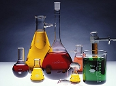
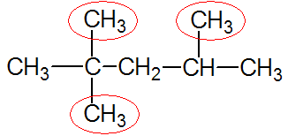

Introducere în chimia organică
Chimia organică este chimia hidrocarburilor (substanţe binare formate din carbon şi hidrogen) şi a derivaţilor acestora. Acest articol reprezintă o introducere în domeniu iar în următoarele din serie vom oferi detalii despre diferitele tipuri de substanţe organice.
Obiectul de studiu îl constituie atât izolarea şi purificarea compuşilor organici, stabilirea compoziţiei şi a structurii lor, cunoaşterea posibilităţilor lor de transformare chimică, cât şi sinteza industrială sau de laborator a compuşilor cu importanţă practică.
Totalitatea elementelor chimice care intră în compoziţia substanţelor organice poartă numele de elemente organogene, care sunt reprezentate în principal de: C (carbon), H (hidrogen), O (oxigen), N (azot), X (halogeni), S (sulf), P (fosfor), dar şi de unele metale.
Atomul sau grupa de atomi care conferă moleculelor proprietăţi fizice şi chimice specifice se numeşte grupă funcţională, ar aceste funcţiuni pot fi omogene (reprezentate de legături multiple carbon-carbon), cât şi eterogene (spre exemplu, grupările hidroxil şi carboxil).
Astfel, substanţele organice sunt încadrate în următoarea clasificare:
- 
Hidrocarburi saturate: alcani -
Hidrocarburi nesaturate: alchine, alchene, alcadiene -
Hidrocarburi aromatice: arene -
Compuşi organici cu funcţiuni: compuşi halogenaţi, compuşi hidroxilici (alcooli şi fenoli), amine, compuşi carbonilici (aldehide şi cetone), acizi carboxilici
-
Compuşi organici cu acţiune biologică: grăsimi, zaharide, proteine, aminoacizi, vitamine.